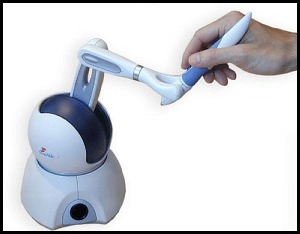
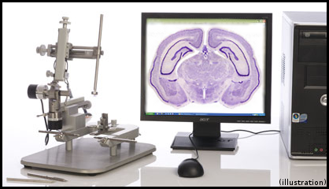
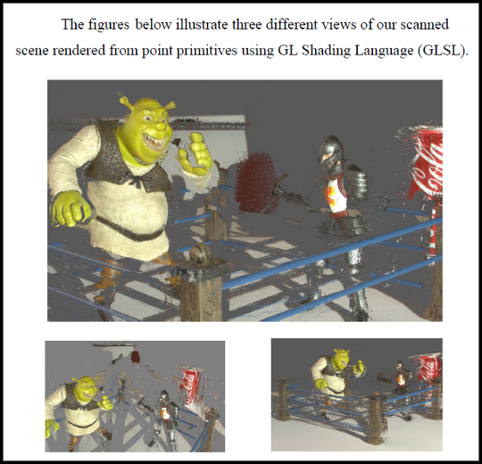
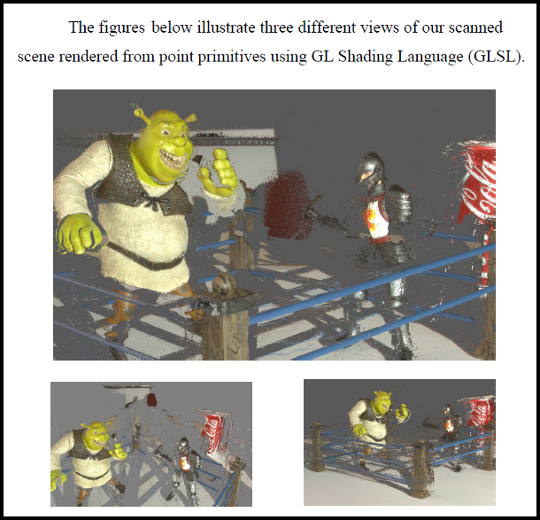
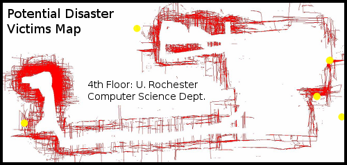
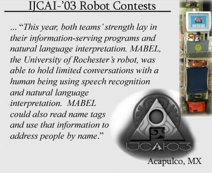
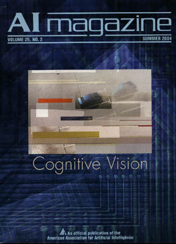

Background:
C#, C++, Java |
RESTful Services |
SQL, Javascript, |
Visualization &
Computer Vision |

Recent ASP.NET Full Stack Developer work with RazorPages, Javascript, SQL, and an SQLite databaseSource can be found at the git hub URL: https://github.com/jschmidGitHub/TestRazorApp Masters Thesis (MsE) supervised by Camillo J. Taylor |
|
University of Pennsylvania: Philadelphia, PA . GRASP Robotics Laboratory. |
|
Drexel University College of Medicine: Lab of Dr. Simon Giszter. Philadelphia, PA .   Research Assistant, Professor Simon Giszter's Neurobiology Lab Fall 2004 - Summer 2005.
|
 

University of Rochester Mobile Robotics Team Lead, Networked Visualization:
Lab of Professor Christopher M. Brown. Rochester, NY .
Visualizing Inter-Language Communication and Control over sockets from C++ clients within the robot's behavioral codebase.
|
I implemented a multithreaded Java program called the LearnServer for high-performance real time parameter adjustment over UDP and sensor visualization. It was typically run on a desktop in the lab, with a wireless connection to the mobile robot. The wireless connection allowed for immediate feedback in the behavior of the system. Robotic code-behaviors in need of parameter adjustment services acted as C++ clients to the GUI. Each maintained a tcp/ip connection to the server, or additional UDP connections for data visualization. Parameters were controlled with immediate feedback through graphical slider bars. Important parameters set through the Java GUI included the time to wait between visual searches and also wait-time between the robot's glances at the food tray to gauge whether it was time to return to base and refill. One critical parameter set the number of estimates used to median filter person position, which controlled accuracy of the robot's attempts to approach people. The LearnServer GUI was instrumental in allowing the team to explore parametric configurations quickly, and facilitated calibrating the robot robustly when presented with unfamiliar environments. |
 |

See:
Schmid J, Brown C M, et al. AAAI Technical Report: Mabel the Mobile Table, 2002 (PDF)
for further detail about the role of the LearnServer
and its various robot-behavior clients.
|  |  |
|
AI Magazine, Vol 25, No 2
Full IJCAI-03 Robotics Art |
Role: Vision Team Leader |